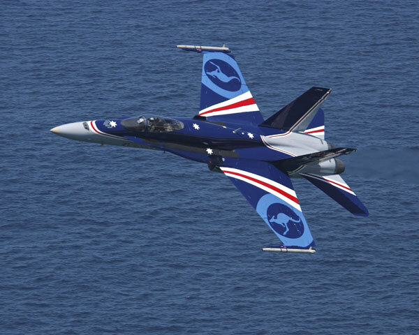
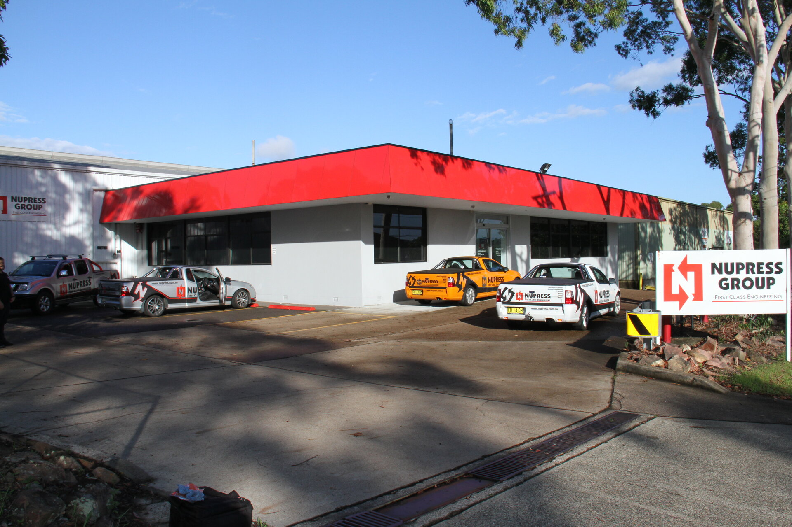
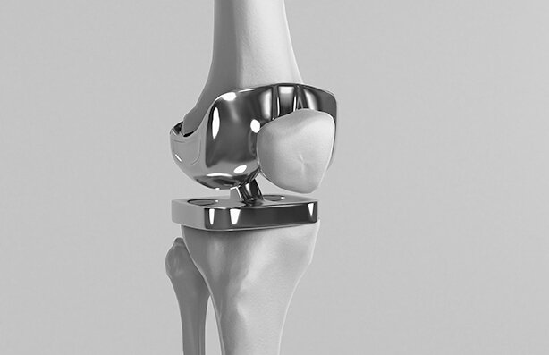
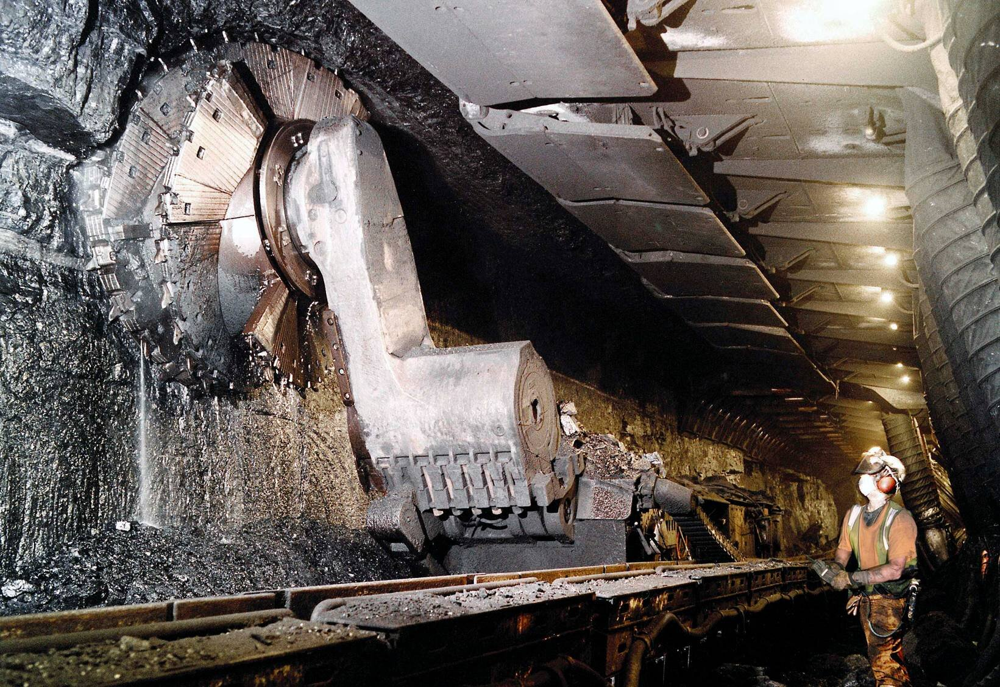
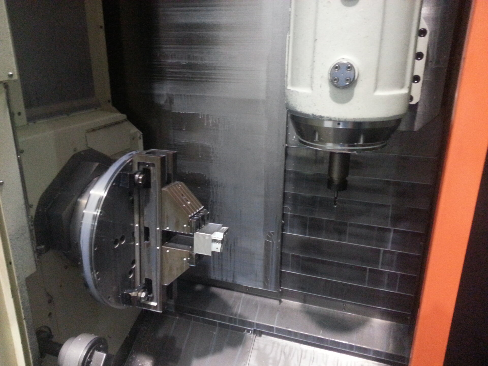
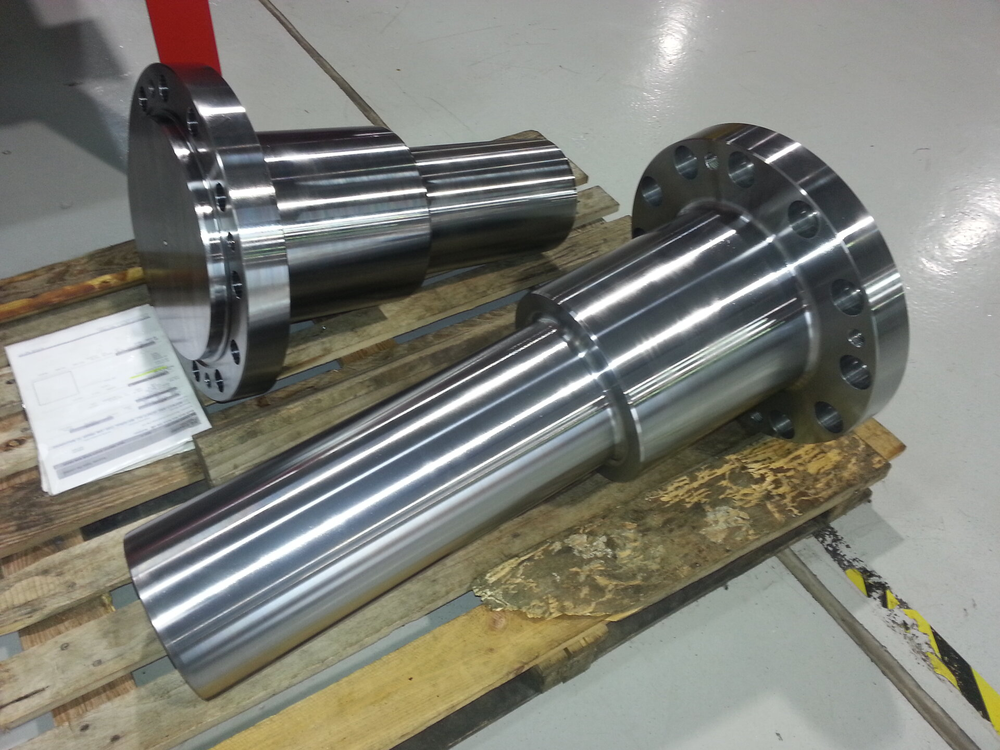
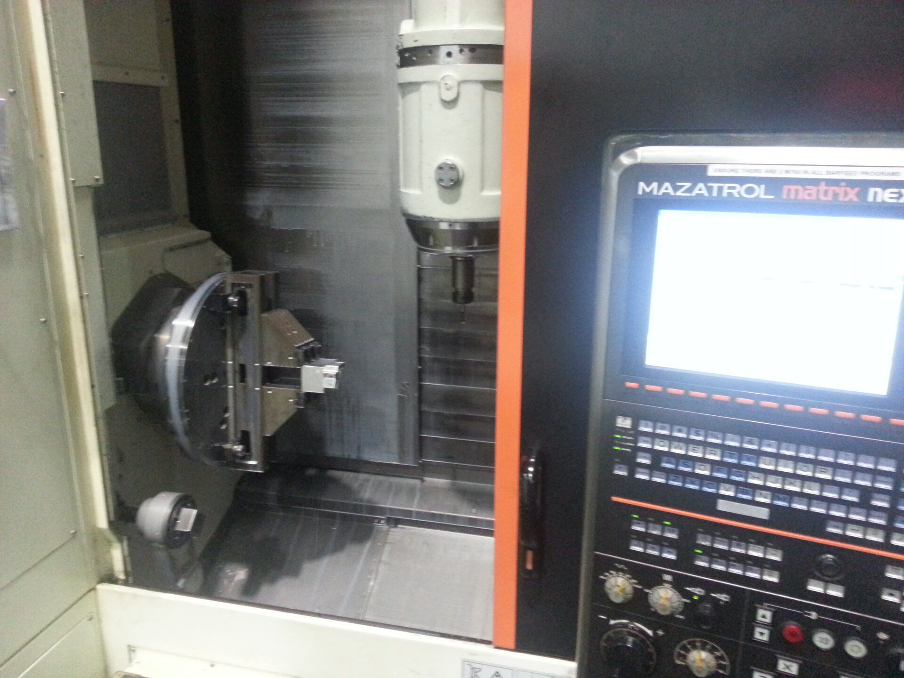
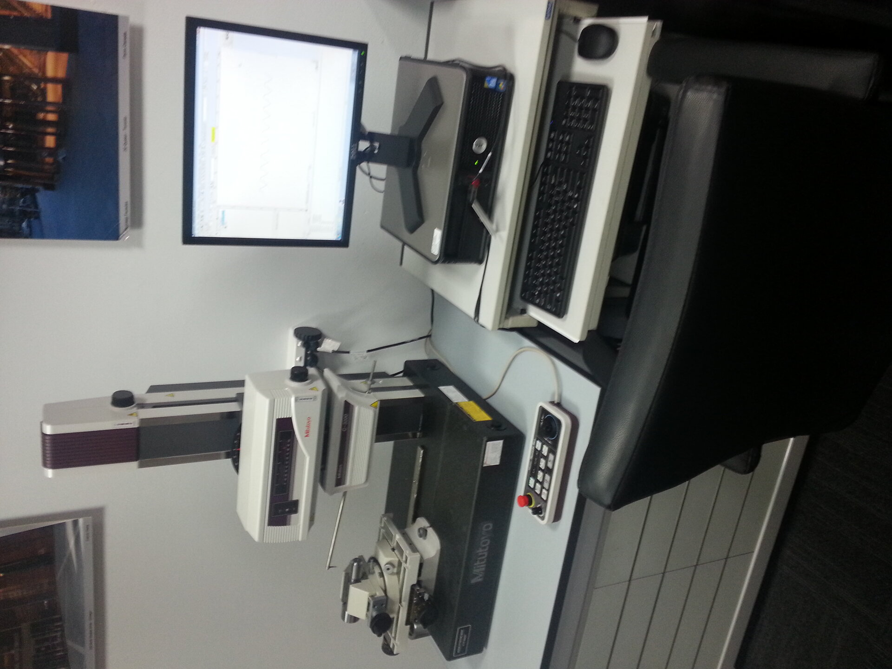

AS9100D
Aerospace & Defence
Flight-critical components to AS9100D. Defence prime contractor programs and military aerospace platforms. Ti-6Al-4V, Inconel 718, Al 7075.
Learn more →AS9100D · ISO 9001:2015 Certified · Newcastle, NSW, Australia
From precision aerospace components to landmark architectural facades — Nupress delivers 5-axis CNC machining and custom fabrication for Australia's most demanding industries. Since 1972.
Our Divisions
From flight-critical components to architectural facades, every division operates to the same relentless standard of precision Nupress has maintained since 1972.

Flight-critical components to AS9100D. Defence prime contractor programs and military aerospace platforms. Ti-6Al-4V, Inconel 718, Al 7075.
Learn more →
Structural glass and facade systems for landmark Australian buildings. Frameless, point-fixed, curtain wall, cable-net systems.
Learn more →
Titanium implants, surgical instruments and orthopaedic components with full material traceability and biocompatibility compliance.
Learn more →
Purpose-built wear parts, drill components, and crusher elements engineered for Australia's harshest mining environments.
Learn more →
Valve bodies, flanges, pipeline fittings and rotating equipment for oil, gas, and renewable energy applications.
Learn more →
High-mix precision machining from prototypes to production runs. Reverse engineering, DFM support, and fast turnaround.
Learn more →World-Class Equipment
Our Mazak Integrex mill-turn centres deliver 5-axis simultaneous machining for the most complex component geometries — reducing setups and maximising accuracy.
View Full Equipment ListIntegrex IGX Cell
The Mazak Integrex IGX cell combines turning and milling in one continuous operation — delivering complex turned and milled components with tight tolerances and consistent repeatability.
Aerospace & DefenceWhy Nupress
Over five decades, Nupress has forged a reputation for delivering when it matters most — on tolerance, on time, and to specification. We're not a generalist shop. Every division is staffed by specialists who live and breathe their industry.
5-axis CNC machining with tolerances to ±0.005mm. Every component measured, documented, and certified before it leaves our Cardiff facility.
AS9100D and ISO 9001:2015 certified quality management systems govern every process — from raw material selection through to final inspection and delivery.
Our engineers work alongside your team from design for manufacturability through to production optimisation — reducing cost without compromising quality.


First Class
From precision machining to quality inspection — every component that leaves our Cardiff facility meets the same relentless standard.
Our team responds to all RFQs within 3 business days.